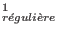
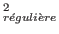

Les adresses peuvent être décrites de deux façons :
$ »
indiquant sa dernière ligne,
Syntaxes :
Adresse1,Adresse2Commande
Adresse1,/Expression /Commande
/Expression /,Adresse2Commande
/Expression /,/Expression /Commande
AdresseCommande
/Expression /Commande
Commande
Exemple 14..2 :
On utilise ici, à titre d'exemple pour les adresses, la commande « d », permettant de détruire les lignes correspondantes de l'espace de travail.
10,20dDétruit les lignes comprises entre la dixième et la vingtième ligne . /^#/,$dDétruit les lignes comprises entre la première ligne commençant par « # » jusqu'à la dernière ligne du fichier (numéro de ligne « $»)./^#/,/end$/dDétruit les lignes comprises entre la première ligne commençant par « # » et la première ligne se terminant par « end ». 10dDétruit la dixième ligne. /10/dDétruit toute ligne contenant la chaîne « 10 ». dDétruit l'ensemble de l'espace de travail.